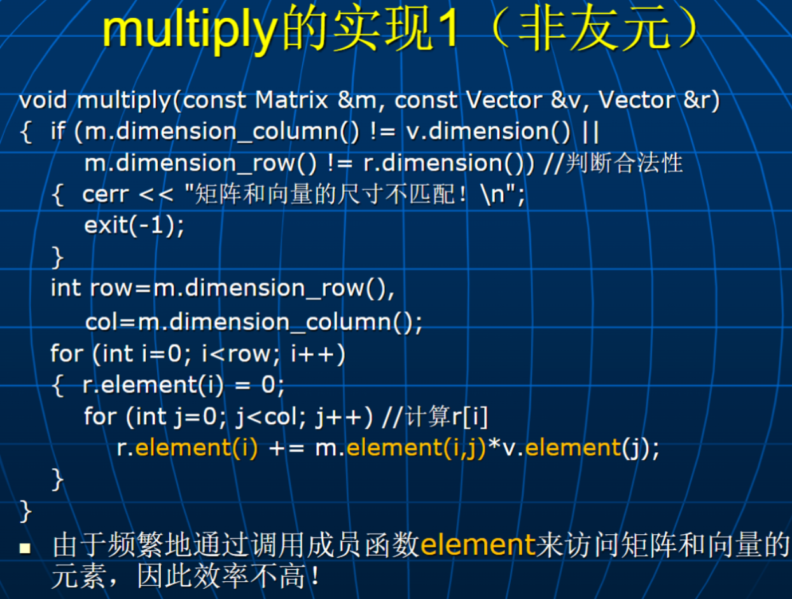
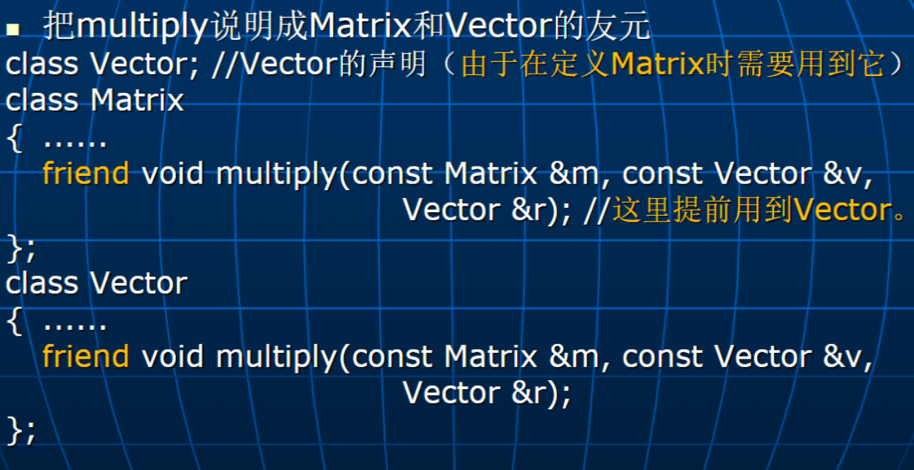
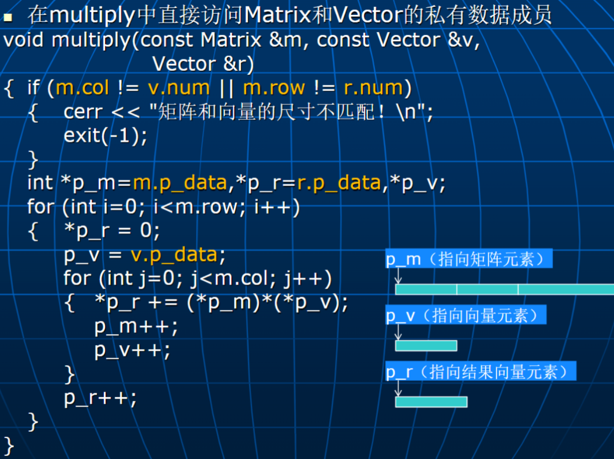
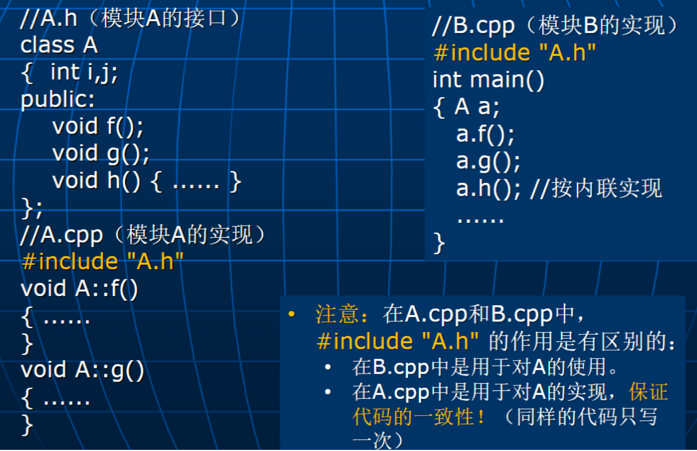
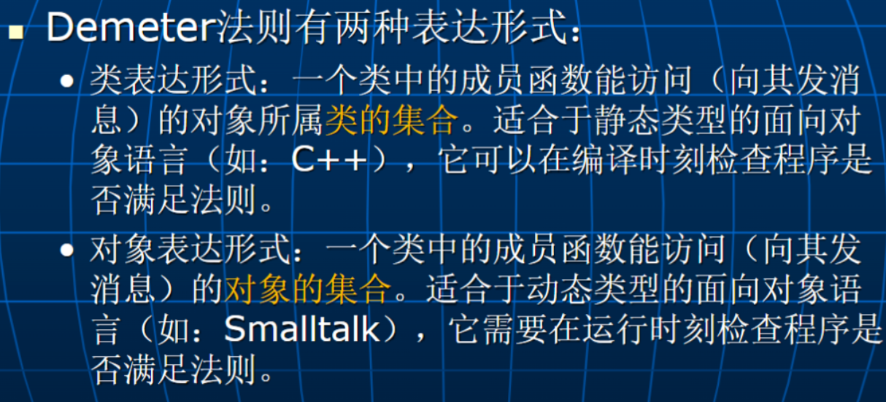

C++高级程序设计-3-类的成员函数和友元
常成员函数及静态成员
常成员函数
- 为了防止在一个获取对象状态的成员函数中无意中修改对象数据成员的值，可以把它说明成常成员函数
- 编译器一旦发现在常成员函数中修改数据成员的值，将会报错
1 | |
- 对常量对象只能调用类中的常成员函数
1 | |
静态数据成员
- 采用静态数据成员可以更好地实现同一个类的不同对象之间的数据共享
1 | |
- 类的静态数据成员对该类的所有对象只有一个拷贝
1 | |
静态成员函数
- 静态成员函数只能访问类的静态成员
- 静态成员函数没有隐藏的 this 函数
1 | |
- 静态成员除了通过对象来访问外，也可以直接通过类来访问。
1 | |
友元
某些情况下，为了提高在类的外部对类数据成员的访问效率，在 C++中，
- 可以指定某些与一个类密切相关的、又不适合作为该类成员的程序实体能直接访问该类的非 public 成员，这些程序实体称为该类的友元。
- 友元是数据保护和数据访问效率之间的一种折衷方案。
友元需要在类中用 friend 显式指出，它们可以是
- 全局函数
- 其它类的所有成员函数
- 其它类的某个成员函数
1 | |
- 友元不是一个类的成员。
- 友元关系具有不对称性。例如：假设 B 是 A 的友元，如果没有显式指出 A 是 B 的友元，则 A 不是 B 的友元。
- 友元也不具有传递性。例如：假设 C 是 B 的友元、B 是 A 的友元，如果没有显式指出 C 是 A 的友元，则 C 不是 A 的友元。

multiply 的实现 2


类作为模块
一个模块包含接口和实现两部分：
- 接口：是指在模块中定义的、可以被其它模块使用的一些程序实体的声明描述。
- 实现：是指在模块中定义的所有程序实体的具体实现描述。
在面向对象程序中，类是一个自然的模块划分单位，一个类构成一个模块，模块边界比较清晰。
C++程序的一个模块由两部分构成：
- 接口：类的定义，存放在一个. h 文件中
- 实现：类的实现（包括类的定义和在类外定义的成员函数），存放在一个. cpp 文件中。

Demeter 法则
一个类的成员函数
- 除了能访问自身类结构的直接子结构（本类的数据成员）外，不能以任何方式依赖于任何其它类的结构。
- 只应向某个有限集合中的对象发送消息。
核心思想：“仅与你的直接朋友交谈！”

类表达形式
对于类 C 中的任何成员函数 M，M 中只能向以下类的对象发送消息：
- 类 C 本身。
- 成员函数 M 的参数类。
- M 或 M 所调用的成员函数中创建的对象所属的类。
- 全局对象所属的类。
- 类 C 的成员对象所属的类。
对象表达形式
对于类 C 中的任何成员函数 M，M 中只能向以下的对象发送消息：
- this 指向的对象。
- 成员函数 M 的参数对象。
- M 或 M 所调用的成员函数所创建的对象。
- 全局变量中包含的对象。
- 类 C 的成员对象。
C++高级程序设计-3-类的成员函数和友元
https://astronautbase.github.io/2025/03/15/C-高级程序设计-3-类的成员函数和友元/